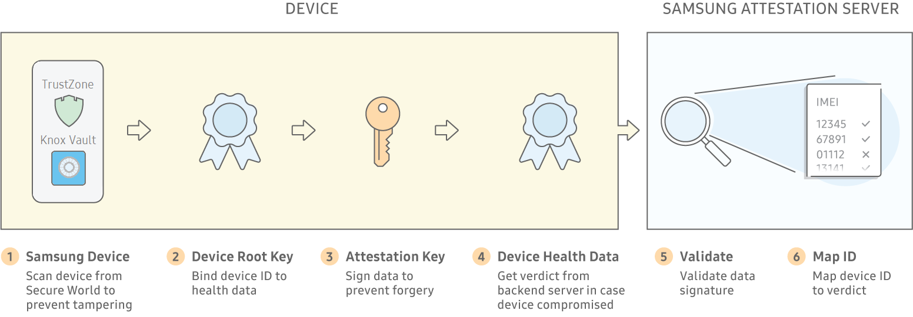
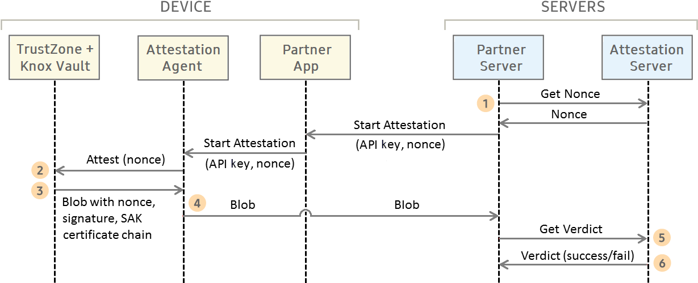

Device Health Attestation
Last updated February 20th, 2024
Mobile apps can be compromised if unauthorized actors are able to run them on untrustworthy hardware or firmware. Such unauthorized actors might include:
- a malicious user deliberately accessing a device they’re not authorized to, for example, while the user is away
- a bad actor who manipulates the device, or its firmware in transit
Such an actor can easily gain full control over the device firmware, files, UI, and apps. Unfortunately, malicious actors can exploit these scenarios to:
- install apps
- steal passwords
- hijack identities
Enterprises with Bring Your Own Device programs are especially at risk, as employees may potentially use compromised Android devices in the workplace. Risks range from:
- the undetected exposure of confidential enterprise assets
- wider more insidious attacks on other enterprise resources and infrastructure
Knox Attestation provides a fail-safe way to detect if a device or its firmware is compromised, before allowing device users to use it in the workplace.
Reliable detection of compromised devices
Malware can potentially intercept and forge the results of a device health check, making a compromised device seem secure. Knox Attestation guards against this risk as follows:

- The Knox platform leverages its hardware-backed trusted environment to reliably detect and report compromised devices. Knox Attestation ensures the integrity of devices during deployment, bootup, and operation using the following:
- Root of Trust— Starts in our factories, when devices are manufactured, with device-unique hardware keys providing a foundation of trust.
- Trusted Boot — Detects unauthorized and out-of-date boot loaders before they compromise devices using bootloader measurements recorded in secure TrustZone memory.
- Knox Vault — Stores sensitive data such as the Samsung Attestation Key in tamper-proof storage that resists both hardware and software attacks.
- Samsung incorporates a Device-Unique Hardware Key in the device hardware during the initial manufacturing of the device. This key binds the device health attestation data to a particular device and is accessible only by a hardware cryptography module and not directly exposed to any device software.
- Knox Attestation signs device health data to prove that it originated from the TrustZone Secure World on a Samsung Knox device. Each device uses a Samsung Attestation Key. When the device is manufactured, a unique RSA private/public key pair is generated. The public key is also signed by a special Samsung Root Key to generate a X.509 certificate. Both the Samsung Attestation Key and its certificate are secured in the device’s TrustZone.
- In case a device is already compromised when a health check is performed, the final test on device health is performed by a Samsung attestation server. To protect data-in-transit, Knox Attestation uses TLS encryption.
- To validate device health data, the Samsung attestation server verifies the Samsung Attestation Key certificate, Attestation Key certificate, and signatures to ensure the integrity of the attestation result.
- To protect from man-in-the-middle replay attacks, which replay the attestation result collected on a healthy device or the same device before it was compromised, the server verifies the random nonce value generated for each requested health check.
Highly secure or firewalled operations that don’t want to access the web-based Samsung Attestation server can install an Attestation Validator tool onto a local server to parse the Attestation Result and keep device verdicts within the firewall.
How Knox Attestation works

Partners such as EMM vendors or ISVs use our Knox APIs to deploy attestation checks. They can enable device checks manually by an admin using a web console or automatically by a regularly scheduled process.
- The web server that initiated the check does the following:
- requests a nonce from the Samsung Attestation server. A nonce is a random number used in cryptographic communication to time-bound and identify each attestation result.
- instructs the device to begin a check, passing the nonce as a check identifier.
- The Keymaster Trusted Application (TA) in Secure World gathers this data:
- the requesting app’s package name, version code, and developer key
- signed info about the device’s current state and expected environment
- hardware fuse readings indicating if untrusted firmware was ever loaded onto the device
- The TA compiles this information into an Attestation Result and signs it with a key that can be verified using the Samsung Root Certificate.
- The device communicates with the Samsung Attestation Server using TLS encryption to protect data-in-transit.
- The Samsung Attestation Server validates the Attestation Result’s signature to ensure that it was generated on Samsung hardware and by Samsung’s TA.
- The Samsung Attestation Server analyzes the Attestation Result to determine if the returned nonce matches the one sent out and whether the data within it can be trusted.
Managing compromised devices
On detecting a compromised device, the Knox platform fuses a one-time programmable Warranty bit that signifies whether or not the device has ever booted into an unapproved state. Once this bit is fused, the work profile no longer operates, preventing access to the secured enterprise apps and data.
The original requestor of the device check can take further action, for example,
- Report the verdict to the device user.
- Immediately prevent the device from accessing other enterprise systems.
- Uninstall any enterprise apps or assets already on the device.
Unique advantages of Knox Attestation
Knox Attestation provides these key differentiators:
- Prevention of replay attacks — Health measurements guaranteed per request through a nonce, a unique number randomly generated by the Samsung Attestation Server.
- Prevention of device ID falsification — Knox Attestation forms a chain of trust using the Samsung Root Key, Samsung Attestation Key, and Attestation Key. It signs attestation results using the Attestation Key, and appends the Attestation Key certificate and Samsung Attestation Key certificate.
- Detection of systemless rooting — Rooting methods like Magisk store system file modifications in the boot partition, which can go undetected by tamper detection methods other than Knox Attestation.
- Correlation of results per device — Health results that easily map to device identifiers like an IMEI. Unlike other solutions on the market, Knox Attestation enables IT admins to determine which attestation result correlates with which device, without having to painstakingly map IDs manually. With competitor solutions, results are returned for separate devices, but IT admins can’t differentiate between devices, and consequently the results are not actionable. Knox Attestation returns a single device ID and enables IT admins to prevent or contain issues promptly.
- Historical tamper record — Knox Attestation guarantees not only the current health of the device, but also a record of whether the device ever ran a non-approved configuration in the past, through the Knox Warranty Fuse.
NOTE: The current release of Knox Attestation was enhanced with Knox version 3.4 and higher. Prior to that, Knox Attestation did not support the enhanced Samsung Attestation Key, detection of device ID falsification, or data-in-transit protection using TLS encryption (SSL encryption was used).
On this page
Is this page helpful?